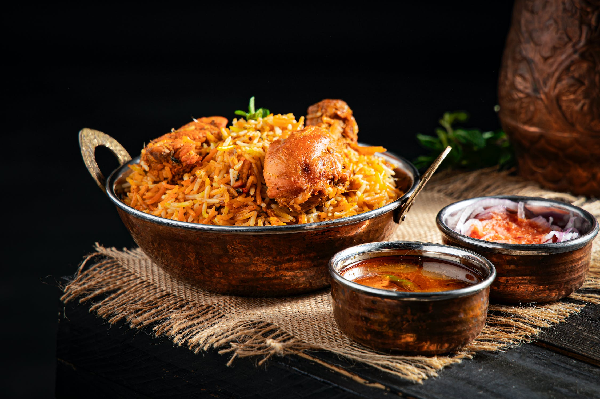

Park and Ride One-Pan Chicken Pilaf

Chicken Pilaf. Credits: Satyam Verma https://www.pexels.com/photo/appetizing-traditional-rice-pilaf-and-soups-on-table-4439740/
Description
Ingredients (serves 2 buffoons):
- 1 tsp olive oil
- 1 small onion peeled and chopped
- 1 diced skinless chicken breast
- 1 tsp curry powder or paste
- 1/3 cup of basmati rice
- 2/3 cup of chicken stock
- 1 cup of frozen mixed vegetables
Steps
- Heat the oil on a pan, then fry the onion until soft.
- Add the chicken pieces and fry for a further couple of minutes just to color the outside.
- Stir in the curry powder or paste, and rice. Cook for another minute.
- Pour in the chicken stock and stir in any larger bits of frozen vegetables.
- Bring to the boil, lower the heat, then cover the pan with a lid.
- Cook for ten minutes, then stir in the remaining vegetables, and the dates. Cook until the stock is absorbed.
- Serve.